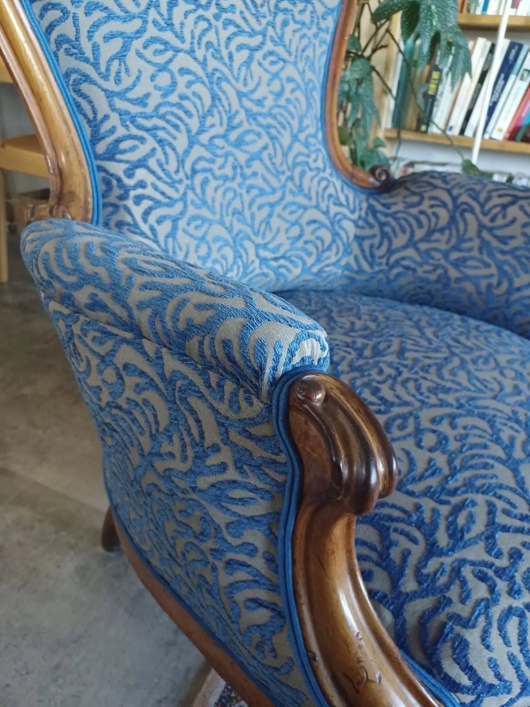
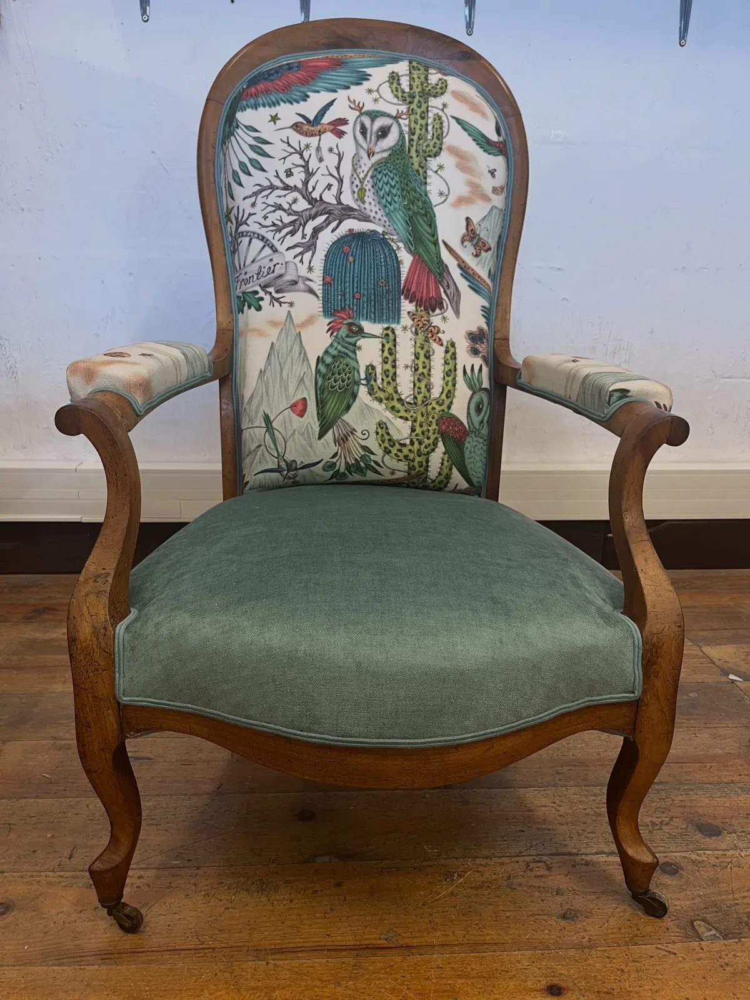
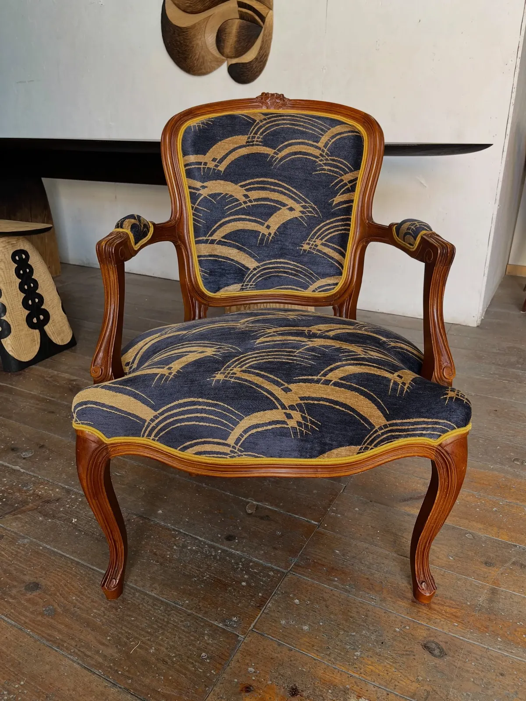
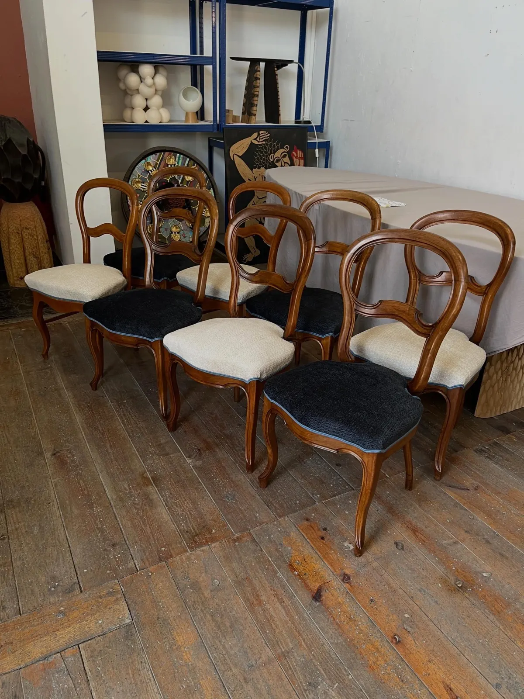
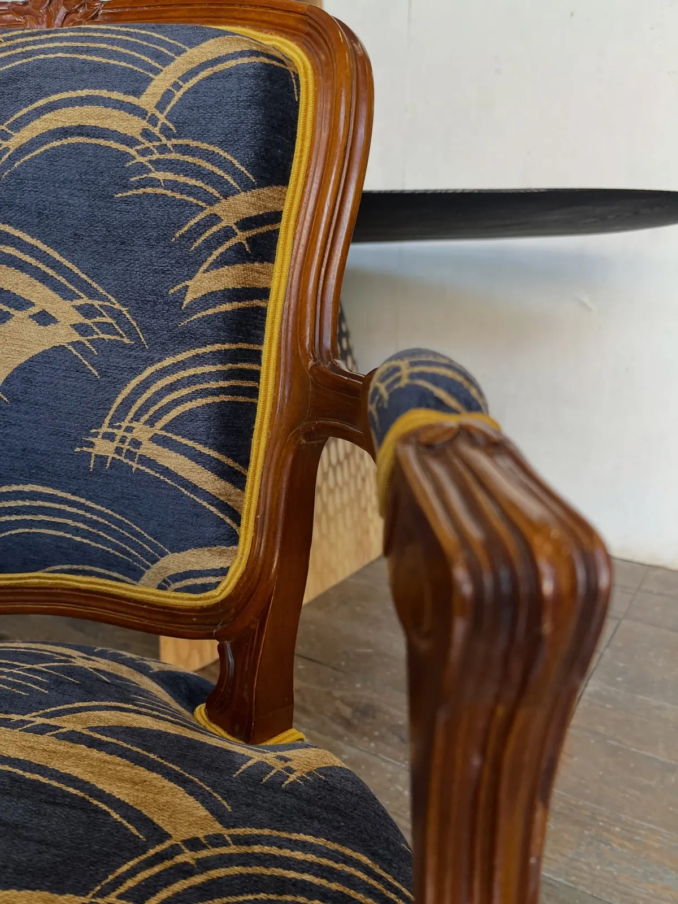
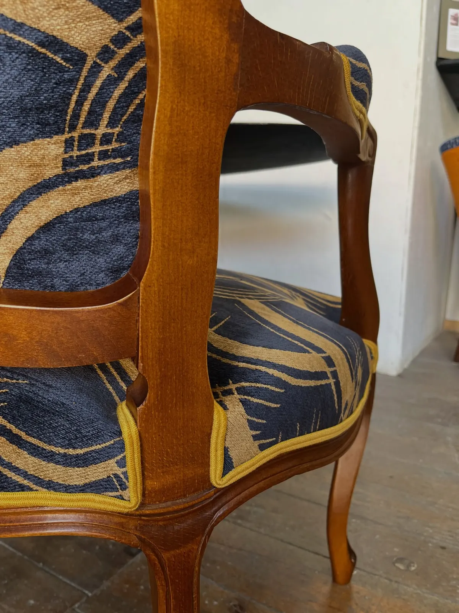
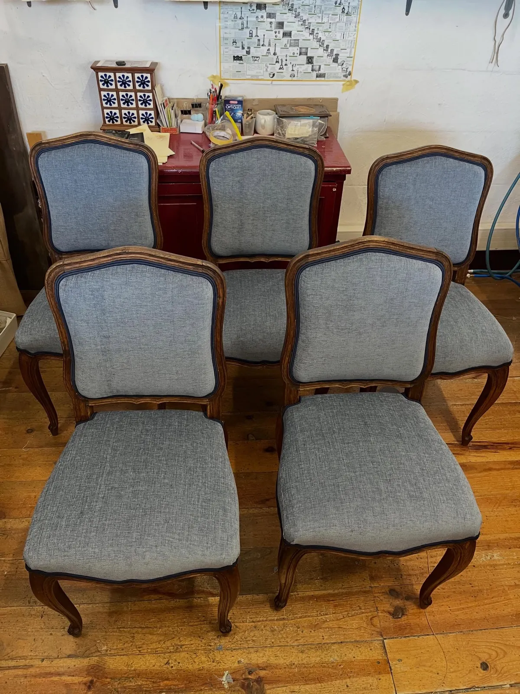
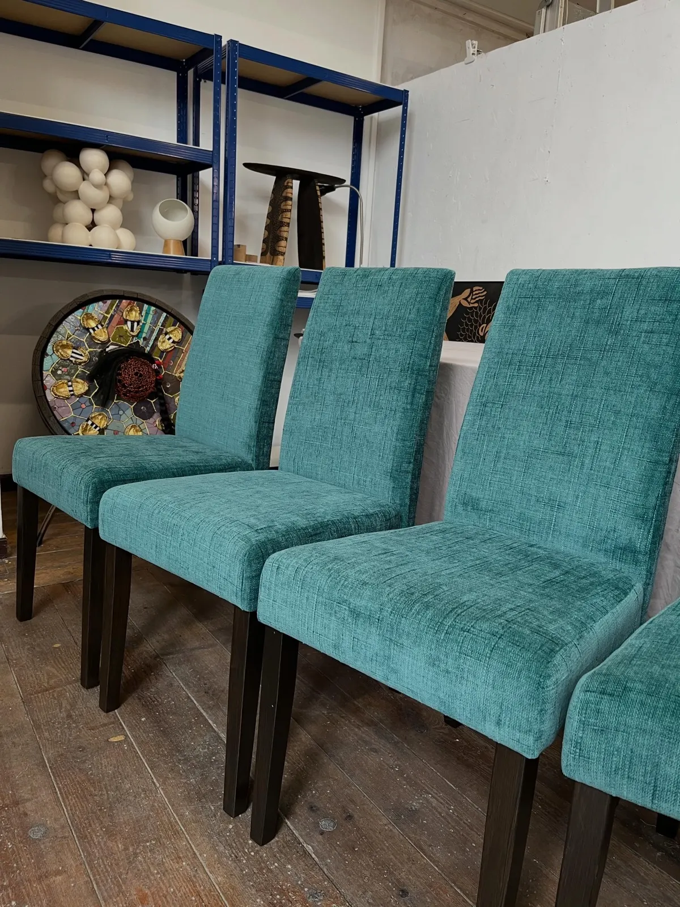
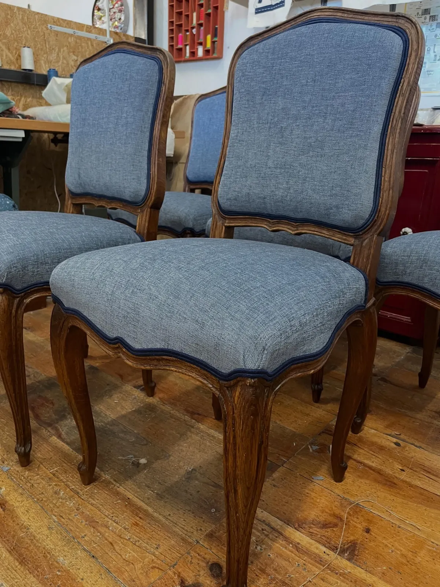
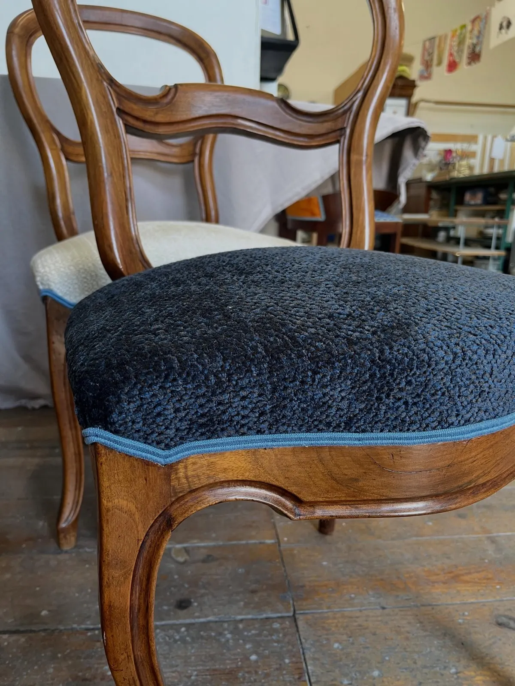

Tapissière garnisseuse diplômée, à Toulouse
Vos fauteuils et vos chaises ont droit à leur printemps.



Maïotte Cartiaux rénove et refait vos sièges, fauteuils, chaises, tabourets et banquettes, en traditionnel comme en contemporain, dans son atelier au fond d'une cour de la rue Michel-Ange.
98 rue Michel-Ange, fond de cour, 31200 Toulouse
- Diplôme de tapissier garnisseur
- Traditionnel et contemporain
- 5,0 sur 5, 12 avis Google
- Du lundi au vendredi, 9 h à 17 h 30

Chaises médaillon, assises écru et bleu nuitCe qui passe entre ses mains, à l'atelier.
Rénovation ou réfection complète, dans l'esprit d'origine ou avec un tissu qui change tout.
Fauteuils
Cabriolet, Voltaire ou crapaud, rénovés et refaits en traditionnel comme en contemporain.
Chaises
Chaises de salon, médaillon ou Louis XV, à l'unité ou en série.
Tabourets et banquettes
Les petits sièges de la maison ont aussi leur place à l'atelier.
Les tissus
Velours, tissus illustrés, motifs graphiques : les dernières réalisations sont habillées de tissus Nobilis et Casal.
Devis sur photos et sur rendez-vous : une photo de votre siège suffit pour commencer.


Un cabriolet, vu de près.
Accoudoirs sculptés, tissu bleu nuit à vagues dorées, et un passepoil moutarde qui suit chaque courbe du dossier et de l'assise.
- TissuBleu nuit à vagues dorées
- FinitionPassepoil moutarde
- BoisAccoudoirs sculptés
Quelques sièges sortis de l'atelier.
Des séries de chaises comme des pièces uniques, du gris bleuté sage au velours vert canard.

Cinq chaises Louis XV, tissu gris bleuté
Velours vert canard

Rénovation et réfection, traditionnelle et contemporaine, de vos sièges, fauteuils, chaises, tabourets, banquettes.
Passer à l'atelier, au fond de la cour.
L'atelier est au 98 rue Michel-Ange, à Toulouse. Envoyez d'abord quelques photos de votre siège : le devis se fait sur photos, puis sur rendez-vous.
Horaires
- Lundi
- 9 h à 17 h 30
- Mardi
- 9 h à 17 h 30
- Mercredi
- 9 h à 17 h 30
- Jeudi
- 9 h à 17 h 30
- Vendredi
- 9 h à 17 h 30
- Samedi et dimanche
- Fermé
31200 Toulouse